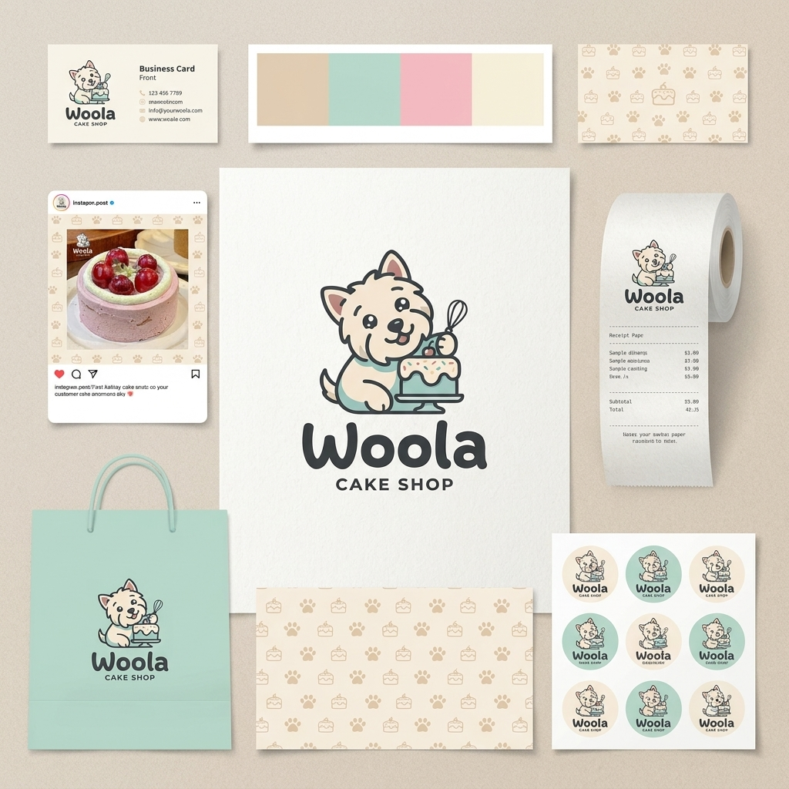
Woola Cake Shop
「Woola」是一个面向年轻女性客群的精品蛋糕咖啡店，以一只圆嘟嘟的小狗为品牌 IP。整套系统覆盖品牌识别 / 包装 / 门店空间，让品牌同时具备线上传播的可爱与线下的高级感。
A CREATIVE ARCHIVE / 25 WORKS
这里收录了 25 件作品，从品牌与角色、影像与产品，到纸上的设计和可以动手体验的小作品。选择一个分类，也可以逐件向下浏览；展开项目，查看说明与作品图。

「Woola」是一个面向年轻女性客群的精品蛋糕咖啡店，以一只圆嘟嘟的小狗为品牌 IP。整套系统覆盖品牌识别 / 包装 / 门店空间，让品牌同时具备线上传播的可爱与线下的高级感。
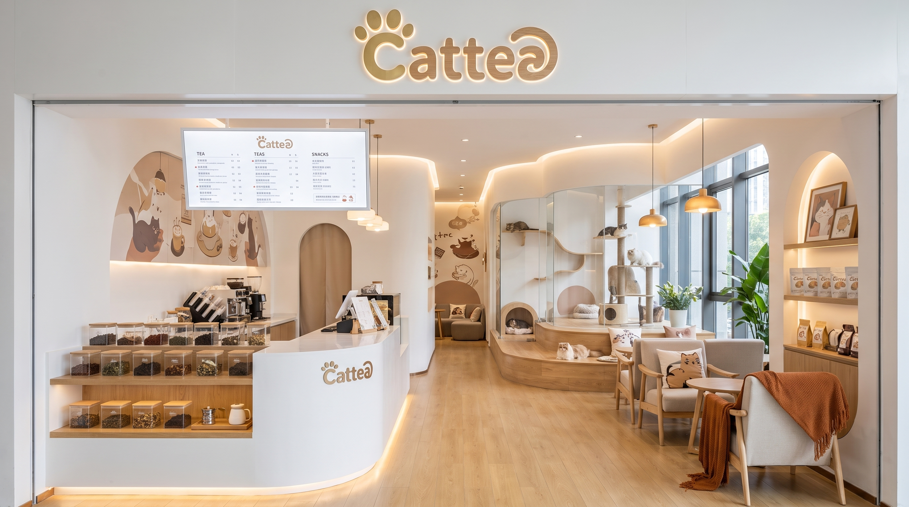
「Cattea」是一只蜷在茶杯里喝奶茶的小白猫，主打「把茶杯当作猫窝」的暖系治愈体验。整套系统围绕这只白猫展开，从菜单到门店都强调舒适、可爱、可被触摸的细节。
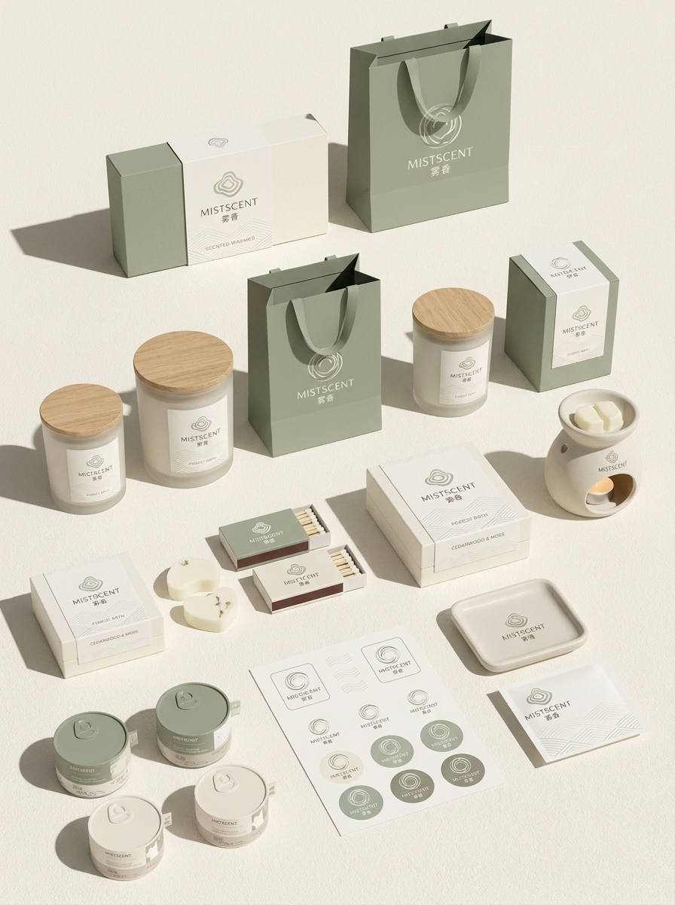
面向「气味疗愈」人群的精品香薰蜡烛品牌。整套系统以「水波涟漪 + 雾」为视觉母题，强调克制、留白与自然质感——所有包装几乎不用彩色，主色调由低饱和的莫兰迪绿与米白构成。
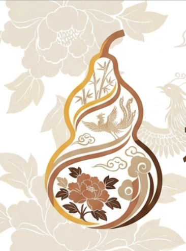
以葫芦为核心意象的中式传统文化品牌，主张"传承古今之美，艺术与自然的完美融合"。完整 VI 体系：Logo/色彩/字体/图形/海报/社媒模板/店铺陈列/物料周边。
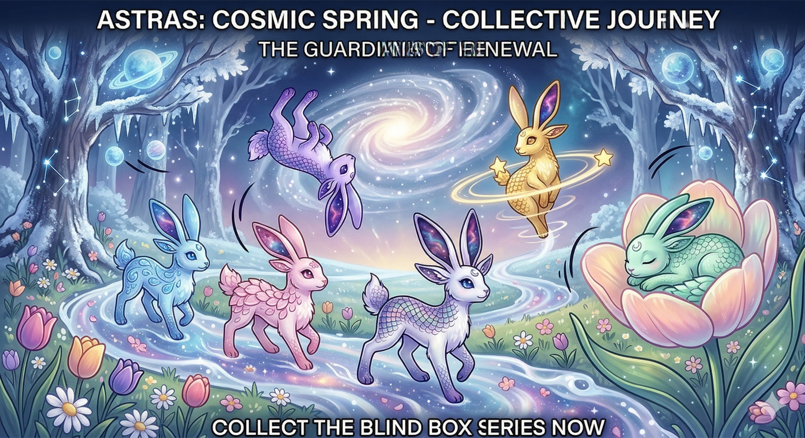
在当代都市文明的坚硬外壳下，灵魂对未知的向往，本质上是对情感寄托与精神自愈的渴求。月灵兔是一种"被遗忘的能量具象"——在不同文明的残篇中似乎能捕捉到流传已久的"月亮与兔子"的潜意识关联。它是连接自然、星辰与都市人破碎情感的唯一介质，跨越成为可以触碰、可以共鸣的"灵魂具象"。
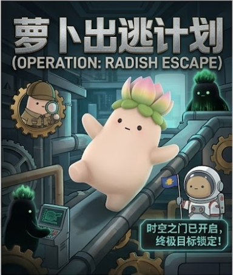
在名为"Greenhouse"的未来数字实验室中，原生精灵 SYLVA 觉醒了自我意识。它不再是受控的试验品，而是进化出了感知情感与穿梭次元的能力。本作品旨在探讨"生命有机体"与"机械电子"之间的边界，通过 SYLVA 呆萌治愈的外表，传递在冷冰冰的赛博世界中依然存在的生命温度。
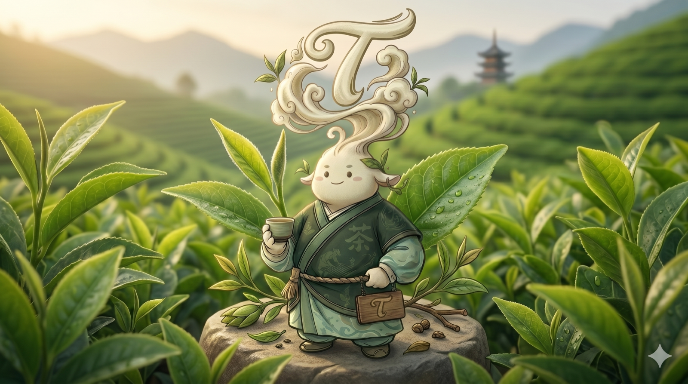
"万物皆可茶，凡事皆可言"——茶言言是一个拟人化的茶业 IP 角色。他安静，是那种会静静听你说话、为你递上一杯热茶的陪伴者。他深谙茶道，懂很多山川自然的秘密，但偶尔会因为被茶香陶醉而发呆。
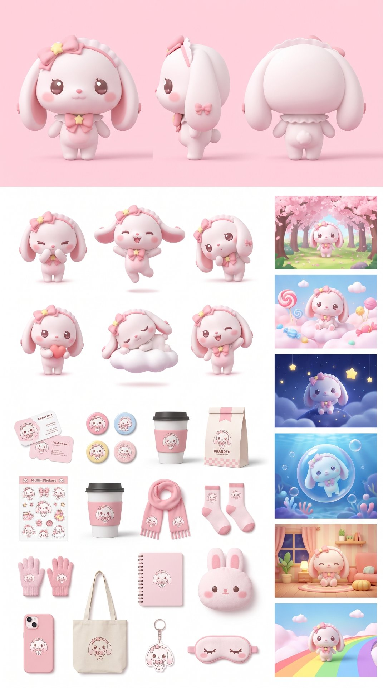
粉系治愈 IP「巧巧兔 Kalio」——一只粉色兔耳、头戴蝴蝶结的女孩角色。整套延展围绕「害羞但好奇」的性格展开，延伸出 5 大主题场景和全品类周边，建立完整的角色生态。
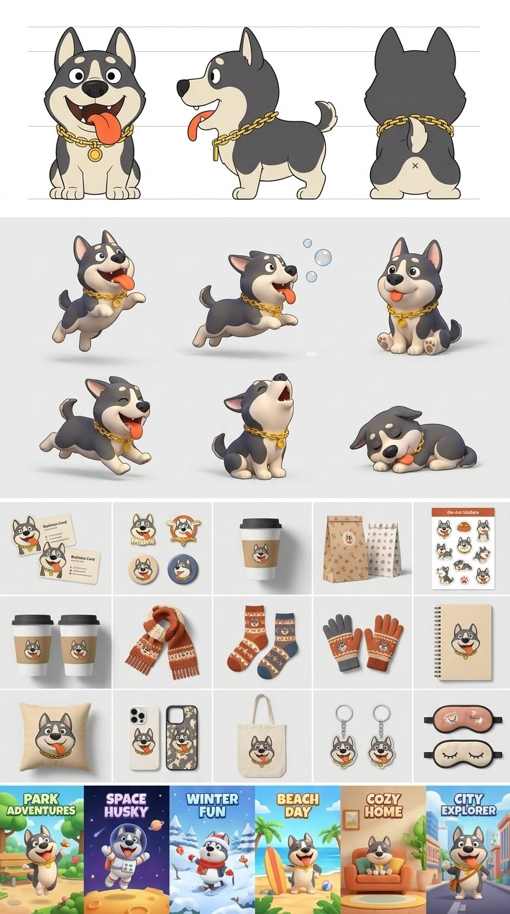
反差萌哈士奇 IP「旺财财」——外形是凶萌的灰白哈士奇，却总是叼着金链子、吐着舌头笑。一套完整 IP 设定，含 6 大场景与全品类周边，适合做表情包、潮玩与品牌联名。
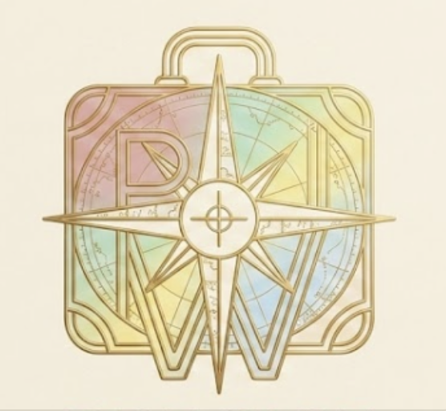
这是一场关于"旅行收纳美学"的视觉盛宴。通过致敬导演韦斯·安德森的经典视觉公式，为虚构高端旅行箱品牌 "Precise Wandering" 打造了一段充满秩序感、强迫症快感与复古奇幻色彩的广告视频。视频核心围绕主角塞莱斯特 (Celeste) 与神秘装置"金色绝对收纳框"展开，探讨了在旅途中，如何在有限的行李箱空间中装进最多的行李。
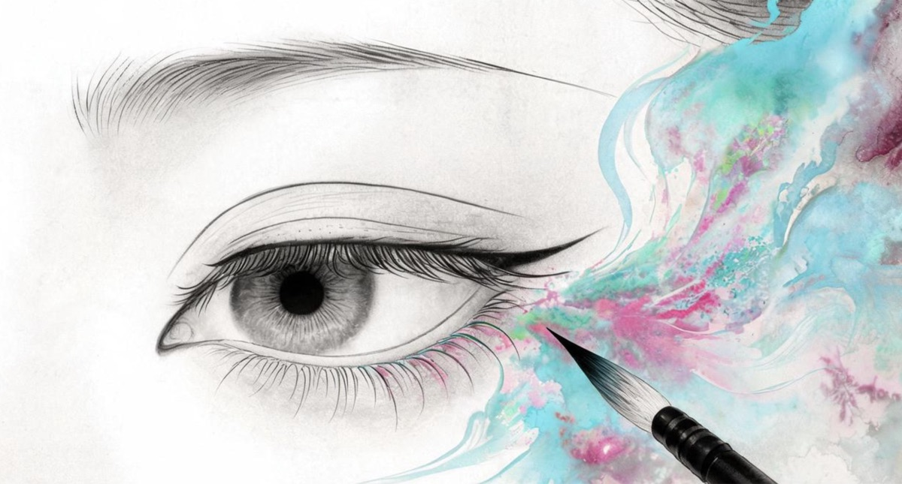
《眼中山河》是一支63秒的AI品牌广告片，为2026上海国际AIGC创新大赛参赛作品。全程AI生成图片与视频，真人配音。灵感源自宋代五大名窑——汝、官、哥、钧、定的釉色。以宋代釉色为色卡，从天然矿物和植物中寻找相同颜色——石青、花青、朱砂、蛤粉——研磨成粉，做成眼影。色彩从盘中蘸取，化为山河，最终又回到盘中。
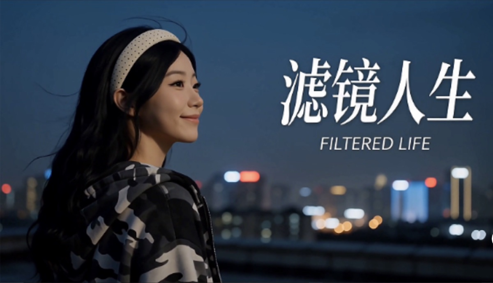
《滤镜人生》是一支53秒的AI叙事短视频。讲的是社交媒体P图焦虑的故事——我们花在P图上的时间比化妆还久，在社交媒体上展示的完美背后，是无数次推脸、缩鼻、调色。但P到最后，最累的是自己。这条视频想说的是：P图不是造假，是我们想把自己觉得好看的那一面留下来。而那个没P的、有点瑕疵的你，也一样真实。全程 MiniMax H3 生成，以本人照片制作三视图为人物原型。
朋友是一位葫芦手艺人，家中收藏了各式各样的葫芦。这个 MVP 让他用手机拍摄藏品，上传后自动分离背景，再把抠出的照片作为伪 3D 展品放进空间：书架、桌子、矮柜，甚至地面都可以陈列，还能一键打乱上架藏品、尝试新的布局。我参与数字展陈、葫芦上架与陈列，并设计不同的家具皮肤。这里保留原项目照片，以一段简短的策展演示介绍整个流程。
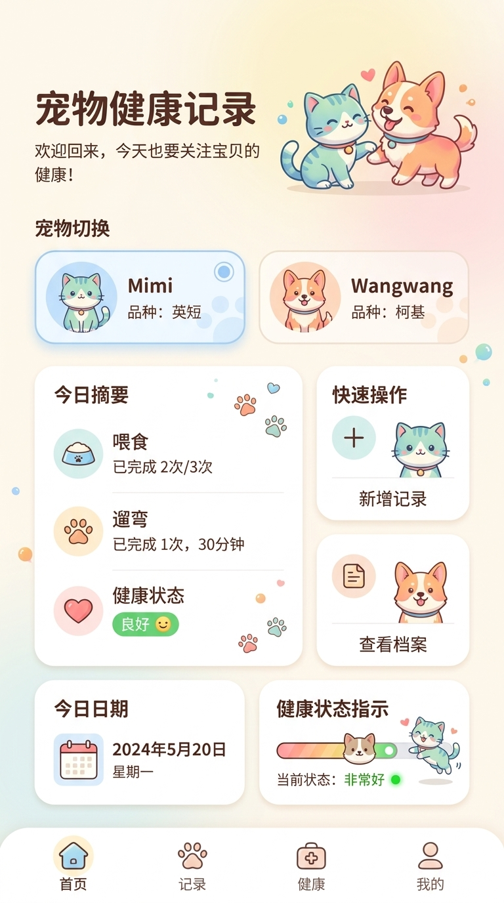
面向「多宠物家庭」的轻量健康记录工具，支持猫咪 / 狗狗 / 其他宠物的切换与差异化记录。整套设计强调「温暖的医疗感」：柔和的薄荷绿 + 暖橙 + 蜜桃粉，配合圆润的卡通图标拉近距离。
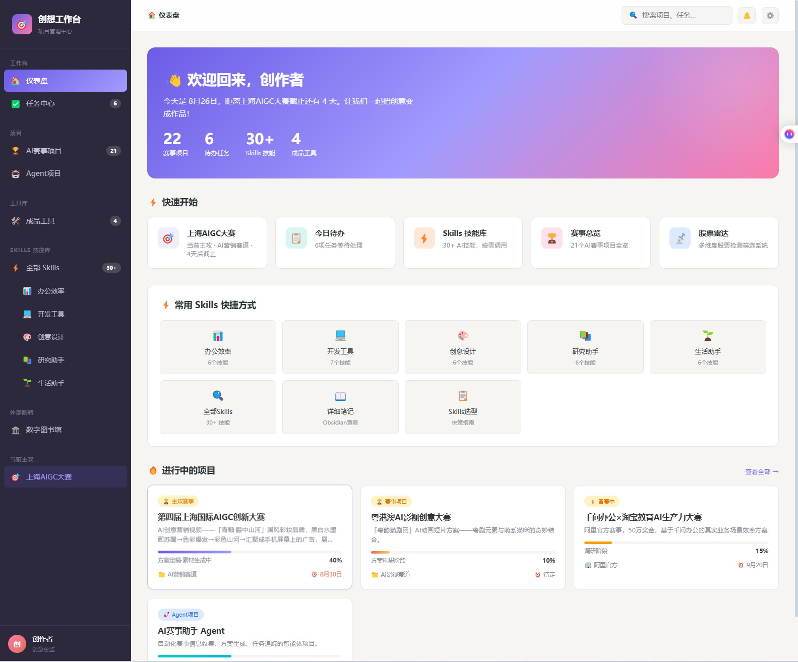
把创作项目、待办任务和常用工具集中起来，让想法与下一步行动有迹可循。
从管理自己的创作项目出发，我搭建了「创想工作台」。它将项目、任务、AI 赛事与 Agent 项目，以及常用工具和 Skills 入口集中在一个工作界面，通过仪表盘梳理待办、项目进展与截止时间，让分散的创作事项有一个清晰的归处。
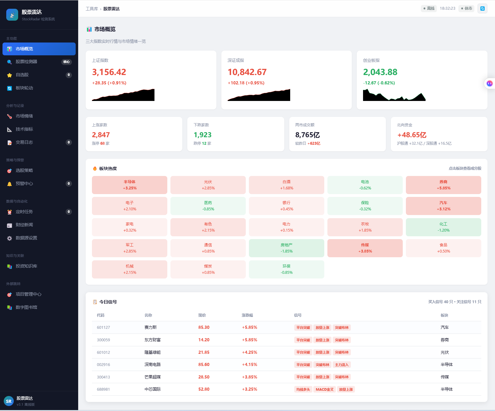
以市场概览为起点，组织指数、板块与个股信息，构建个人股票研究工作台。
「股票雷达」是我围绕个人股票研究与信息整理搭建的系统。界面以市场概览为入口，将指数走势、市场情绪、板块热度与个股信号分层呈现，并组织股票检测、自选股、技术指标和交易日志等模块，让不同维度的信息更容易浏览与对照。
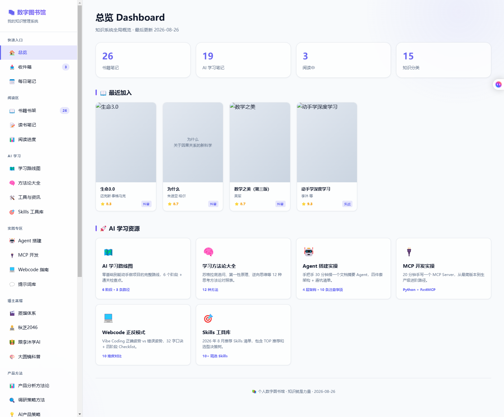
将书籍、阅读笔记与 AI 学习资源归入一个知识空间，连接阅读、学习与实践。
「数字图书馆」是我为个人阅读、学习与资料整理搭建的知识管理系统。它把书籍书架、读书笔记、阅读进度与 AI 学习资源放在同一个空间，再通过学习路线、方法论和实践资料的分类，将零散收集的内容整理成便于回看和继续学习的知识结构。
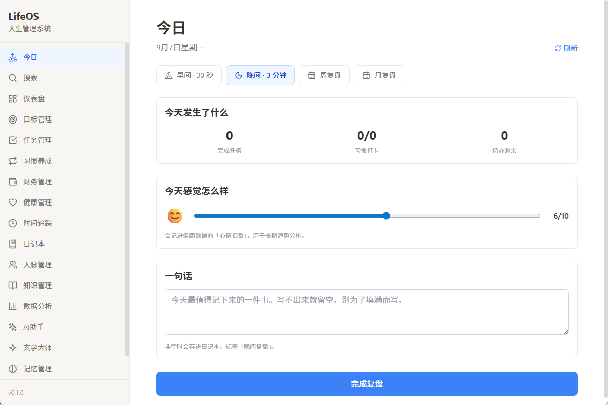
从每日记录和复盘出发，把目标、任务、习惯与 AI 助手纳入个人生活管理。
「LifeOS」是我围绕个人生活管理搭建的系统，希望把目标与日常行动连接起来。每日页面以早间记录、晚间复盘和周期回顾为切入点，整理任务、习惯与心情；AI 多助手页面则按不同需求组织对话角色，让生活记录、规划与思考有一个持续使用的空间。
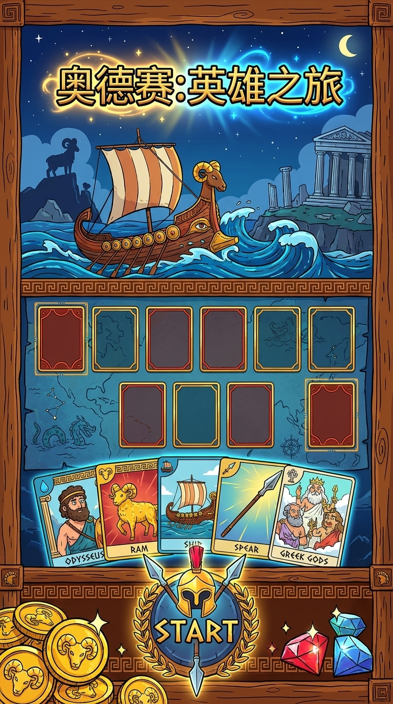
「奥德赛 · 英雄之旅」是一款以古希腊史诗为背景的卡牌对战游戏 UI 系统。整套界面采用手绘卡通风格：粗犷的黑色描边、鲜艳的撞色搭配与木质描边相框，让厚重的神话题材兼具活泼与史诗感。从奥德修斯扬帆起航的初始界面，到公羊冲锋的史诗战场，再到胜利结算与宝箱奖励，四个核心界面完整覆盖了「出战 → 对局 → 结算 → 领奖」的游戏闭环。公羊、战船、长矛、希腊众神等主题元素贯穿始终，配合金币宝石资源体系与希腊回纹装饰，形成了高度统一的视觉语言。
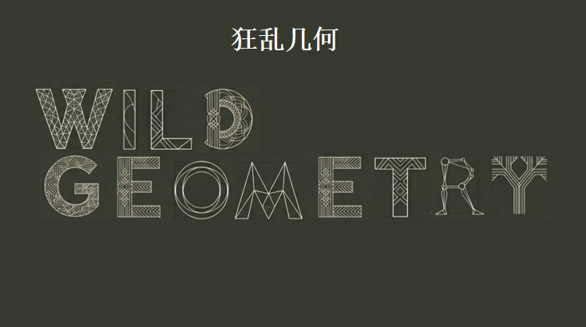
探索"暗黑自然主义"在数字手绘环境下的线性表达。设计核心在于模拟生命体在"绞杀"与"干缩"状态下的受力图形。灵感捕捉自绞杀型藤蔓的缠绕逻辑与干枯古木的开裂纹理，用 Procreate 手绘完成。
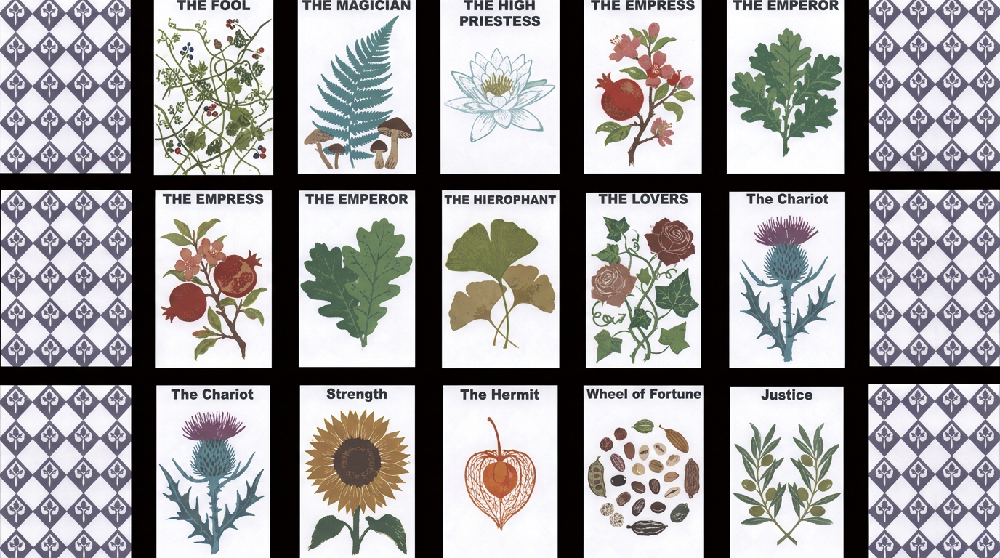
一套以植物诠释塔罗牌大阿卡纳的印刷卡片系列。每张塔罗牌对应一种独特的植物，通过植物的形态与象征意义解读塔罗牌的内涵。使用者可以像抽塔罗牌一样，心中带着问题随机抽取一张植物牌，通过植物的花语与象征意义，结合自身问题进行解读与反思。整体采用丝网印刷/Risograph质感，大胆撞色，探索植物、文字与玄学之间的诗意关联。
《精灵漫游》是一款融合原创角色设计、珠宝场景与互动动画的横版闯关小游戏。五位软陶质感的精灵，穿行于粉晶花园、珍珠水廊、翡翠瀑谷、紫晶洞窟、琥珀潮岸和月光浮岛。选择喜欢的旅伴与关卡，在多层台阶间二段跳跃、发射晶光、收集旅途印记，挑战自己的三星纪录。每片风景都有独立的场景与机关，让一次小小的冒险，也成为一场关于色彩、材质和角色性格的漫游。
《绒绒野餐会》是一款以原创毛绒动物和点心伙伴为主角的弹珠合成小游戏。在阳光下的野餐小院里，瞄准发射，让三个相同的小伙伴碰在一起，合成下一位朋友。绒绒动物园和点心野餐会可以自由选择，各有八个逐步解锁的关卡，分别保存当前局面与旅程星星。奶油色桌布、鼠尾草绿遮阳篷和温暖的手绘质感，陪伴一场轻松的小小相遇；玩家头像独立选择，不影响正在玩的主题。
一款复古风格的贪吃蛇小游戏，用原生 JavaScript + Canvas 开发。暗绿色调配合发光效果，致敬经典街机游戏。支持键盘方向键和 WASD 控制，移动端支持虚拟按键，带有分数记录和最高分本地存储。下方即可直接开始游戏。
《浮光守卫》是一款梦境河道塔防小游戏。十幅印象派画境全部开放，十二位原创动物守卫在岸边布阵，阻止持续进入的墨潮抵达莲花。每关免费自带金币工坊，玩家在升级生产、扩展火力与培养伙伴之间做选择。完整图片奖池展示所有角色、碎片、道具与概率；击败怪物和通关获得永久星尘，挑战三星获得额外抽奖券。游戏有独立文件夹与便携包，作品集只连接其入口。